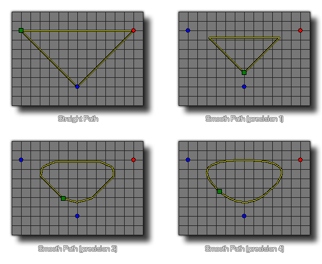

path_set_precision(index, prec);
| Argument | Description |
|---|---|
| index | The index of the path to change. |
| prec | The precision of the path. Must be an integer between 1 and 8. |
Returns : N/A
With this function you can change the "smoothness" of a path. This value must be between 1 and 8, with a low value creating straighter edges with sharper curves between points, while a higher
value will round the points and make the path a lot more "curvey". Note that this function will have no visible effect if the path has not been set to smooth in the path editor or using the function
path_set_kind. This function changes the actual path resource, and so will permanently affect how the path is used by all instances in the game
from the moment the function is used until the end of the game.

path_set_precision(path0, 2);
This will set path0's precision to 2.